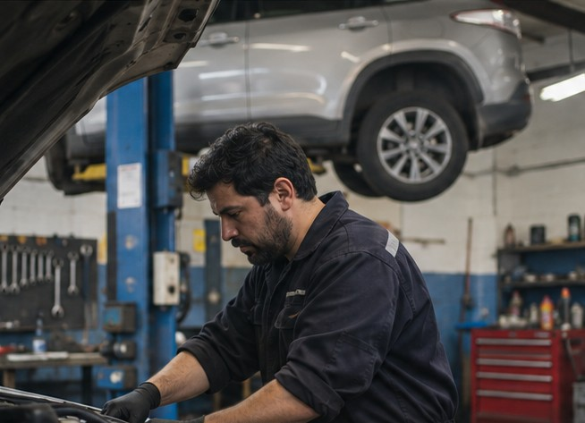

Nombre provisional
Tu auto, en
buenas manos.
Mantención, diagnóstico y reparación.

Servicios principales
Catálogo provisional
Mantención preventiva
Aceite, filtros y revisión general.
Diagnóstico
Revisión de fallas, ruidos y testigos del tablero.
Frenos
Revisión de discos, pastillas y funcionamiento.
Tu visita, paso a paso
Propuesta de atención
- Cotiza según tu vehículo
- Indica el modelo y describe lo que necesitas revisar.
- Coordina tu visita
- Elige un horario de preferencia. El taller revisará tu solicitud.